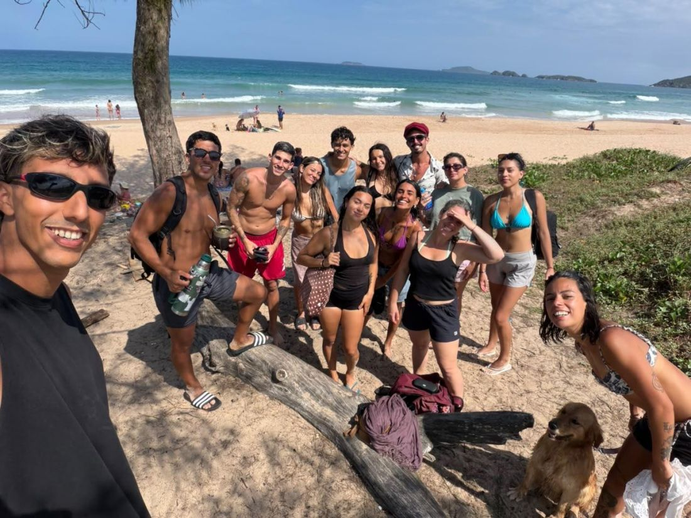

Somos una comunidad abierta de personas que comparten la curiosidad por la vida, las ganas de explorar nuevas posibilidades y la voluntad de crecer en conjunto.

A través de encuentros, preguntas, experiencias, movimiento y naturaleza, creamos oportunidades para conectar con nosotros mismos y con otras personas.
No importa de dónde venís, qué hacés, qué sabés o cuáles son tus creencias.
No necesitás experiencia previa, conocimientos específicos ni cumplir ningún requisito para participar.
Cada persona tiene un lugar y es bienvenida tal como es.
Somos personas diferentes, con historias, experiencias, perspectivas y formas de ver la vida.
Escuchamos sin juzgar, respetamos las opiniones de los demás y entendemos que no necesitamos pensar igual para compartir.
No buscamos tener razón, sino ampliar nuestras perspectivas.
Cada persona elige cómo quiere participar, qué desea compartir y qué experiencias quiere explorar.
No imponemos creencias, herramientas, prácticas ni formas de pensar.
Cada uno es responsable de sus propias elecciones y experiencias.
No hay una única persona que tenga todo el conocimiento ni alguien que deba estar siempre al frente.
Cada integrante puede compartir sus talentos, conocimientos, intereses, experiencias e inquietudes.
Podés participar, aprender, proponer, facilitar o simplemente disfrutar de lo que otros comparten.
La comunidad no es un servicio que alguien ofrece ni un espacio que pertenece a una sola persona.
Es una construcción colectiva.
Las iniciativas nacen de las personas que forman parte.
La comunidad está en constante evolución.
No somos una estructura cerrada ni tenemos todas las respuestas.
Estamos abiertos a nuevas ideas, propuestas, personas y posibilidades.
Aprendemos de nuestras experiencias, revisamos nuestras formas de hacer las cosas y permitimos que la comunidad evolucione con quienes la integran.
En el grupo de WhatsApp avisamos cada encuentro. En Instagram compartimos lo que vivimos.